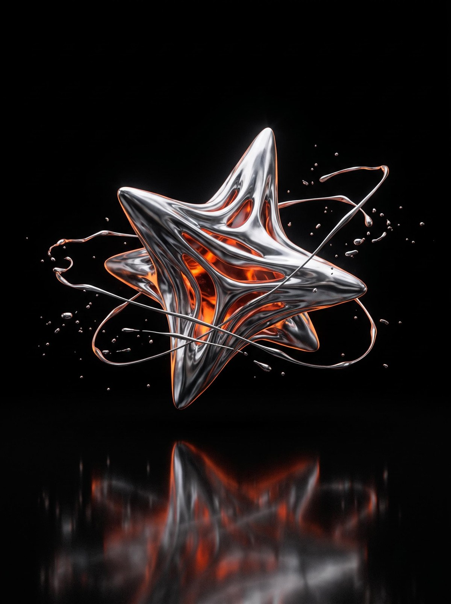
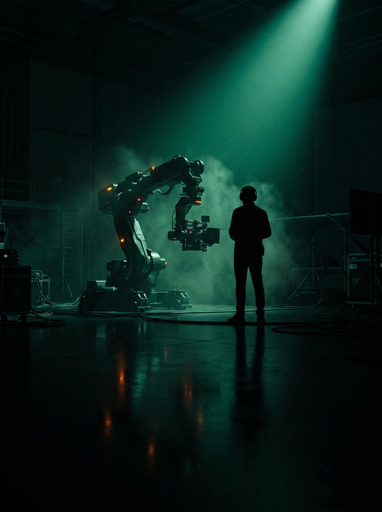

SCENE 01BRAND / KEY ART
01 / SPARK
把火种，
把火种，
做成品牌。
LIQUID CHROME · VIOLET LIGHT · CINEMATIC
A NEW STAGE FOR CREATORS
一个把 AI 生产、人才实训、矩阵变现与产业孵化装进同一条流水线的创作生态。从第一支片，到第一笔收入，再到一个团队，都在同一套系统里完成。

LIQUID CHROME · VIOLET LIGHT · CINEMATIC
DIGITAL DOUBLE · CONSISTENCY · IDENTITY

MULTI MODEL · VOICE · SMART EDIT
星火聚落把生产、实训、变现与孵化串成闭环。工具是入口，课程是加速器，分销是现金流，OPC 是让创作者留下来的理由。
剧本、角色、成片、配音、出片，五个子模块覆盖短剧生产全流程。全部基于画布式工作台。
训练课程
入驻创作者
分发账号
案例作品
与产业各方资源深度协作，共建算力、IP、资产与渠道能力。
合作方名称来自平台功能规划文档，正式上线前需确认露出权益。数据为页面雏形示意，上线后接入真实平台数据。